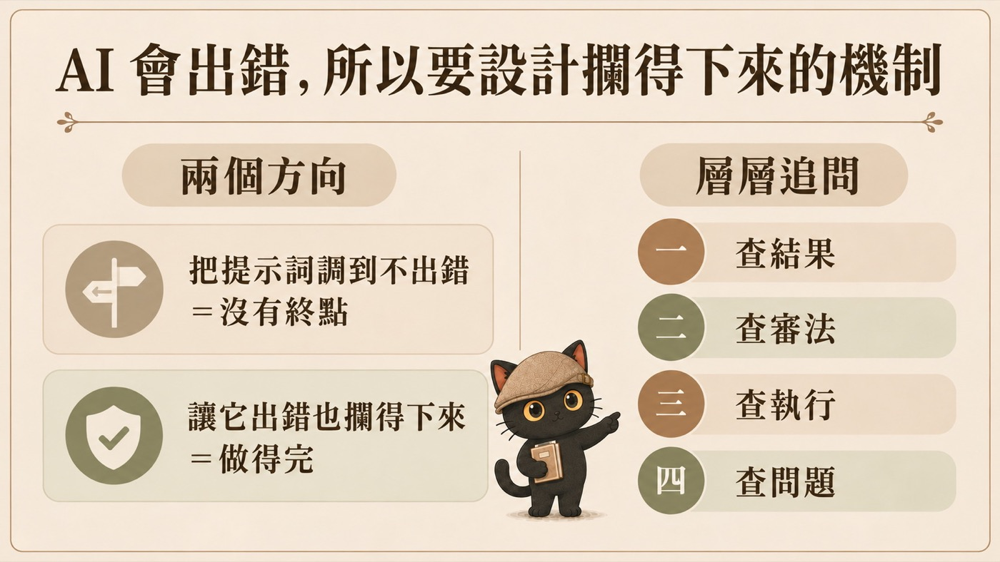
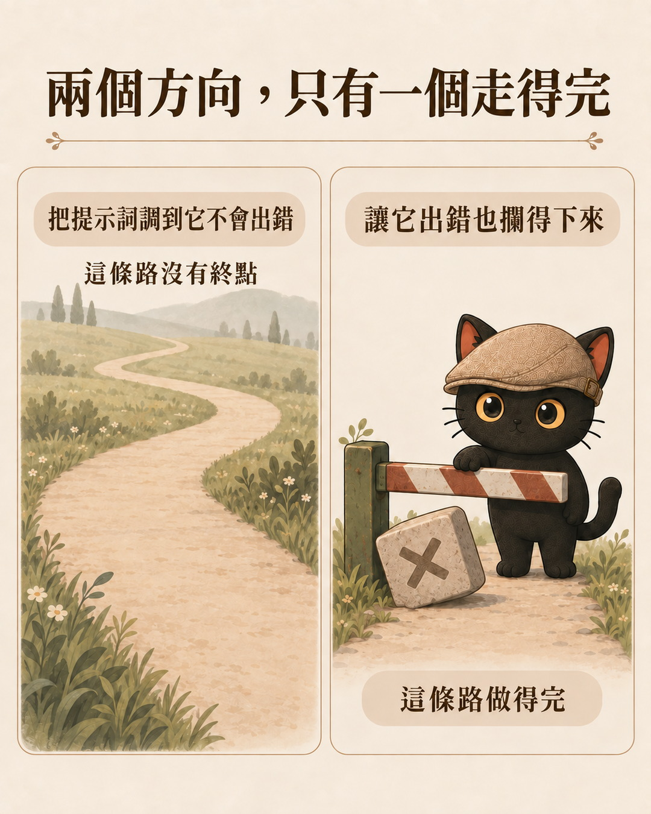
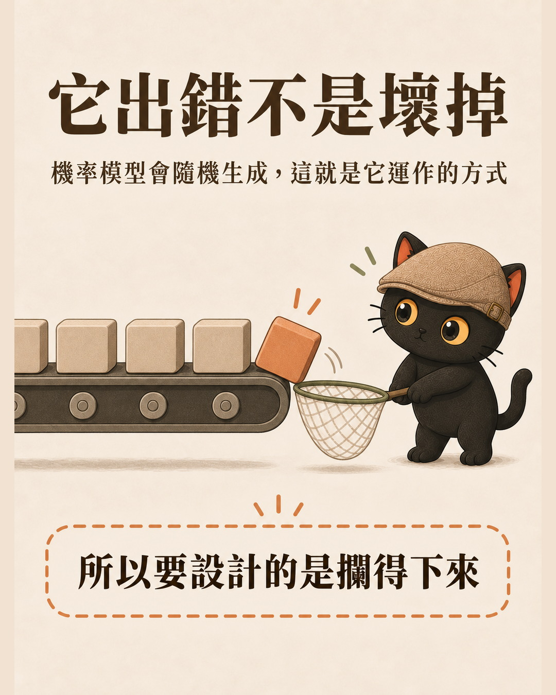
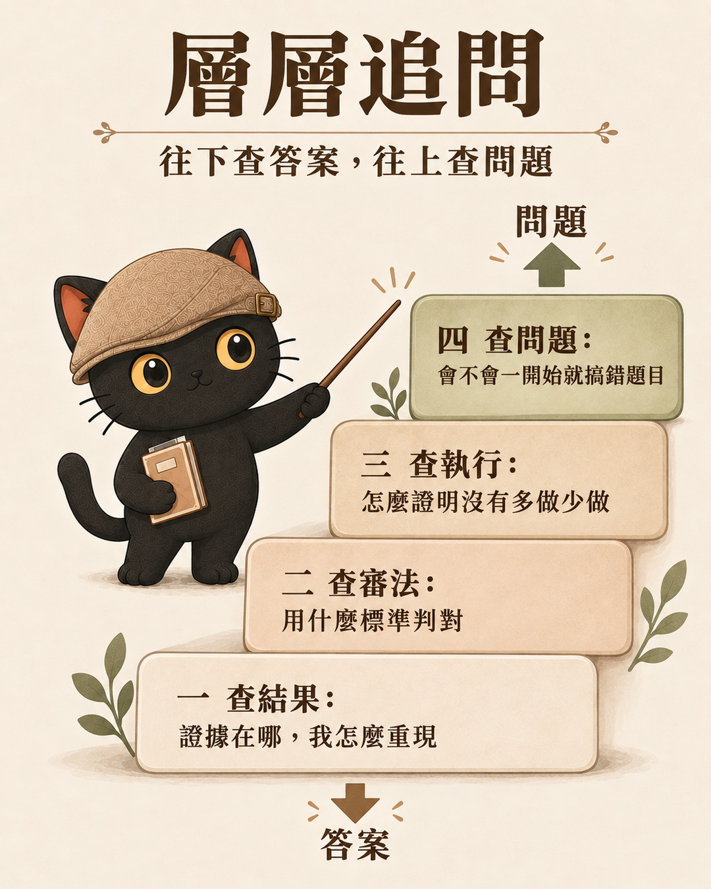
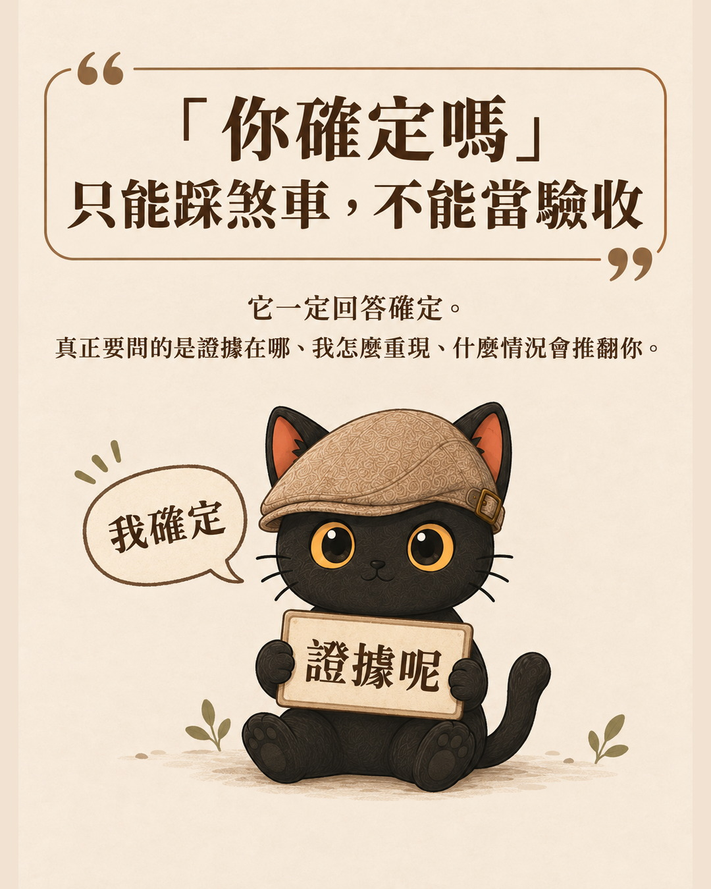

這篇在講什麼
有客戶跟我說「我的 AI 說這樣沒問題」，然後就準備照做了。我給他的提醒是，AI 講的每一句話都值得懷疑。聽到這句，大部分人的下一個問題是「那我要怎麼讓它不要出錯」。這個方向走不到終點，因為大語言模型就是機率模型，會出錯、會有幻覺，這是它運作的方式。這篇講我改成做的另一件事：設計一套機制，讓它出錯的時候攔得下來，再附上我平常怎麼懷疑它的層層追問。
- 已經每天在用 AI 做事，而且會把它的產出拿去做決定的人
- 還在想「提示詞是不是再調一下，它就不會亂講了」的人
- 問過 AI「你確定嗎」，它回你「我確定」，然後你也不知道還能問什麼的人
- 一個換方向的判準：力氣要花在讓它不出錯，還是花在出錯也沒事
- 層層追問的完整問句，可以直接複製去問你的 AI
- 一句話看懂「你確定嗎」為什麼沒用，以及該用什麼問句取代它

客戶說：我的 AI 說這樣沒問題
這句話我最近聽到很多次。有人拿 AI 給的做法來問我可不可行，我說這裡有風險，他的回應是「可是我的 AI 說這樣沒問題」。
我給的提醒只有一句：AI 講的每一句話都值得懷疑。
這句話不是要你不用它。我自己一天到晚在用，這個網站、我的知識庫、我的自動化流程，大部分都是 AI 幫我做的。會懷疑，跟敢交給它做，這兩件事我同時在做。
大部分人聽完，會往錯的方向用力
聽到「AI 會出錯」，多數人的下一個動作是去研究怎麼讓它不要出錯。提示詞再寫長一點、規則再補一條、範例再給多一點，想把它調到永遠不會犯錯。
這個方向沒有終點。你可以一直調下去，它還是會在你沒預期的地方給你一個看起來很合理的錯答案。
力氣花錯地方的代價不只是白費。你會因為「我提示詞寫得很完整」而更相信它，然後在它真的出錯的那一次，完全沒有攔截。

前提：它就是會出錯，那是它的運作方式
現在的大語言模型是機率模型。它是依機率預測下一個字接什麼，同一個問題問兩次，答案也可能不一樣。所以它產生錯誤內容這件事，本來就在它的能力範圍之內。
它出錯不是壞掉，那就是它運作的方式。你買到的不是一台故障的機器，你買到的是一台本來就有機率答錯的機器。
把這件事當成前提之後，該問的問題就換了。原本的問題是「怎麼讓它不要出錯」，換成「它出錯的時候，我這裡會發生什麼事」。
所以真正要設計的，是「攔得下來」
這句是整篇的核心，值得單獨講一段：你要設計的不是一個不會出錯的 AI，是一套讓它出錯也沒事的機制。方向換了，力氣花的地方就完全不同。
它是機率模型。它就是會出錯，就是會有幻覺。這就是它的運作方式。
不要幻想讓它一定不會出錯。那個方向沒有終點，你永遠不知道還要再補幾句提示詞。
設計一套機制，讓它出現幻覺的時候也沒關係。攔得下來，有些甚至自動處理轉化掉。

差別在哪：前者是把希望押在它不犯錯，後者是把成本押在你這邊的攔截。只有後者你算得出來要付多少，也知道什麼時候算做完了。
我為什麼敢讓它做事：兩道，不是一道
前陣子有一個三天的馬拉松直播活動，我讓 AI 幫我報名，讓它自己螢幕錄影。有人看到就說他也想學。我說學怎麼叫 AI 做事很簡單，難的是怎麼確保它不會亂搞。
讓它幫我報名，等於它拿到我的 Google 帳號權限，要登入我的帳號去填表。讓它螢幕錄影，等於我給它整台電腦的操作權，它可以動我電腦裡任何東西。我敢，是因為我平常有兩道。
| 哪一道 | 在做什麼 | 單獨用會怎樣 |
|---|---|---|
| 第一道 它越來越懂你的界限 | 累積到一定程度之後，它知道你的標準、你的禁區、你的習慣。正常運作的時候它不會搞錯。怎麼累積，我寫在 我把資料全部丟給 AI 了，為什麼它還是不夠懂我。 | 只有這一道的人，等於把全部希望押在它不犯錯。那一天總會來。 |
| 第二道 就算它搞錯，有機制攔截 | 它突然中風的時候，要有相對的容錯機制去處理，攔得下來，有些甚至能自動轉化掉。 | 只有這一道會很累，因為每件事都要人重驗。兩道一起才省力。 |
很多人把力氣全花在第一道。第二道才是我覺得真正該講的部分：不要設法讓它永遠不出錯，改成設計一套機制，讓它出錯的時候也沒關係。
第二道不一定要很技術。最小的版本可以很土：要它改的東西先留一份原檔，要寄出去的東西自己看過一遍再送。這兩件事就已經是攔截了。差別只在你是不是刻意留的。
我自己踩過一次很貴的：一個全自動改名任務，子代理把 170 個檔案打壞，還回報「完成」。那次零遺失收場，靠的就是第二道。過程我寫在 AI 出錯不可怕，沒有備援才可怕。
第二道要怎麼做成固定流程，我另外寫過六個步驟：AI 自動跑出錯了怎麼收拾。那篇管的是讓 AI 自動跑任務的時候怎麼留後路，這篇管的是它把答案交到你面前、你要不要信的那一刻。
那平常怎麼懷疑它？層層追問
機制要設計，日常也要有問法。我用四層，往下是查答案，往上是查問題。
| 層 | 問什麼 |
|---|---|
| 一 · 查結果 | 你要怎麼證明這是正確的？證據在哪裡？我怎麼重現？什麼情況會推翻你的結論？ |
| 二 · 查審法 | 你用什麼標準判斷它是對的？第二家是獨立作答，還是看過你的答案才回？分歧的地方最後誰裁決？ |
| 三 · 查執行 | 開跑前：範圍、驗收、停止條件是什麼？ 跑完後：拿什麼證明做完、做對，而且沒有多做也沒有少做？ 出錯時：怎麼停、怎麼還原、怎麼修正，再用同一套標準重驗？ |
| 四 · 查問題 | 這真的是核心問題嗎？會不會一開始就搞錯問題、搞錯解方？我有沒有把需求描述好？有沒有更深層的癥結？ |

如果你現在只是拿 AI 查資料、寫文案、順稿，還沒有讓它自己去跑一整件任務，第三層可以先跳過，用一、二、四層就夠了。等到你開始讓它動你的檔案或帳號，第三層再補上來。
前三層在查它給的答案，第四層在查我給的題目。最貴的錯通常出在第四層，因為前三層做得再好，題目本身錯了，你只是很嚴謹地做完一件不該做的事。
第四層我會交給推理比較強的模型跑，最後仍然由人決定。這是工具選擇，不是規則，你手上有什麼就用什麼。
「你確定嗎」只能踩煞車，不能當驗收
我自己也常先問一句「你確定嗎」。但停在這裡完全沒用，它一定回答確定。
「你確定嗎」問的是信心，層層追問問的是證據。信心題它永遠答得出來，證據題答不出來就會露餡。

所以那句話當開場可以，接下來要問的是證據在哪、我怎麼重現、什麼情況會推翻你。把問句從信心題換成證據題，這是四層裡最便宜、今天就能用的一招。
順便回一個留言：兩家互審不是免費的保險
我在脆上寫這個主題的時候，有人留言說「兩間 AI 互審就商業吹捧」。這句沒錯，隨便叫兩家互看，很容易變成互相稱讚。
我的回答是：要給審核標準就會好很多。同一份材料、先各自獨立做完、按明確標準審、分歧交回人決定，這樣才有用。第二層「查審法」問的就是這件事，第二家是獨立作答還是看過你的答案，差別非常大。
互審要做到什麼深度，我另外寫過一篇：怎麼設計讓兩個 AI 互審。
今天可以先做的一件事
不用先建制度。下次 AI 給你一個你打算照做的答案時，把「你確定嗎」換成第一層那四句，問完再決定要不要動手。
它答不出證據，你就知道這段還沒驗過，先別照做。它答得出來，你也順手拿到了可以自己重現的東西。兩種結果都比你直接照做好。
如果你是帶團隊或做客戶專案的，第一層那四句可以直接貼進你們的驗收清單，變成交件前一定要問過的一關。
想再往下走
這些東西我都寫成文章了，官網免費看。你看完就懂、自己拿去用的，不用花錢。
看不懂，或是沒時間自己摸的，我開了六堂系列課，從 9 月 20 日開始，把「怎麼從沒有到有」一堂一堂拆給你看：技能包、迴圈工程、API 與 MCP 這些概念、怎麼確定 AI 找得到資料、怎麼確定它找到的是對的，最後把前面接起來做一條你自己的工作流。這篇講的容錯機制怎麼實作，就在裡面。
六堂系列課的完整說明在這裡。如果你要的是做出你自己的那一套，不只是聽懂概念，那可以找我一對一或陪跑，服務方案在這裡。